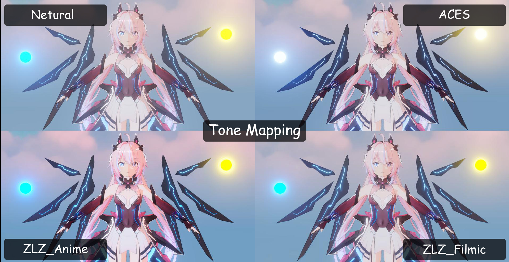

This document explains how to set up a character for use with ZLZ Anime Shader Character. The shader is designed around a role-based material workflow, allowing multiple levels of character setup.
You can choose the approach that best fits your mesh structure and experience level,
without being required to use every feature.

Tone Mapping has a significant impact on the final look of the character. It is recommended to set up Tone Mapping before adjusting the character’s materials.
This shader supports two setup approaches to accommodate different visual requirements.
You may choose either approach, as both provide full access to the shader’s functionality.